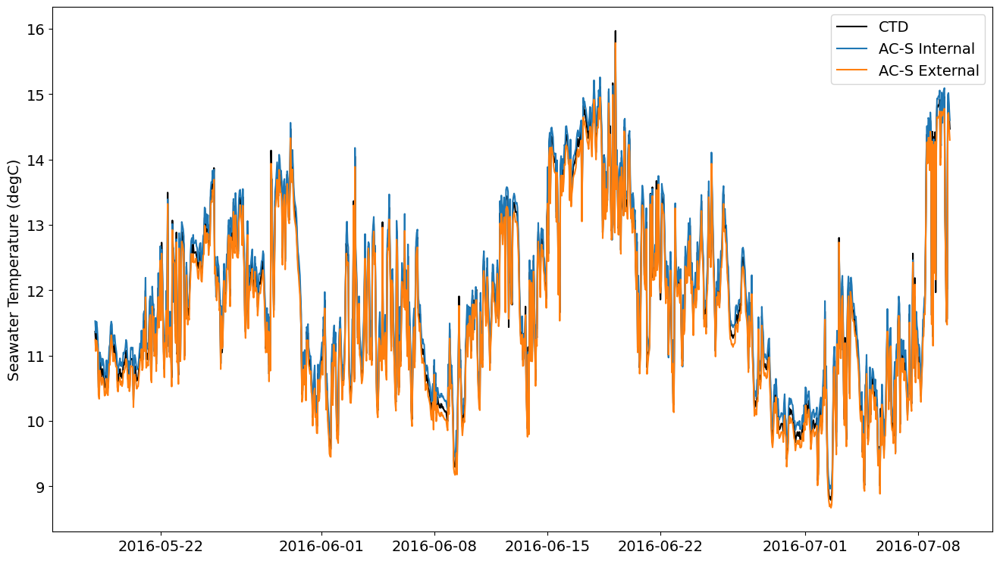
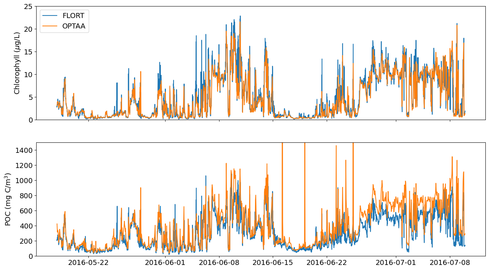
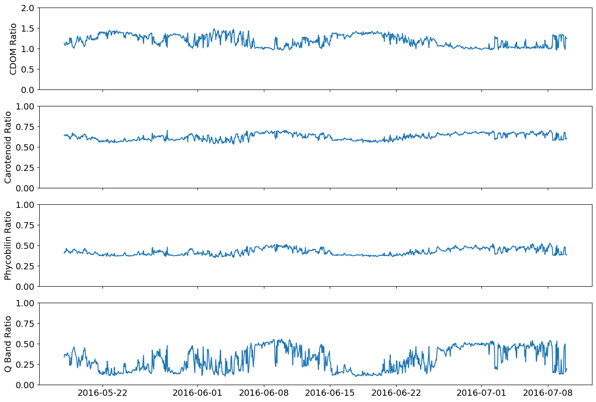
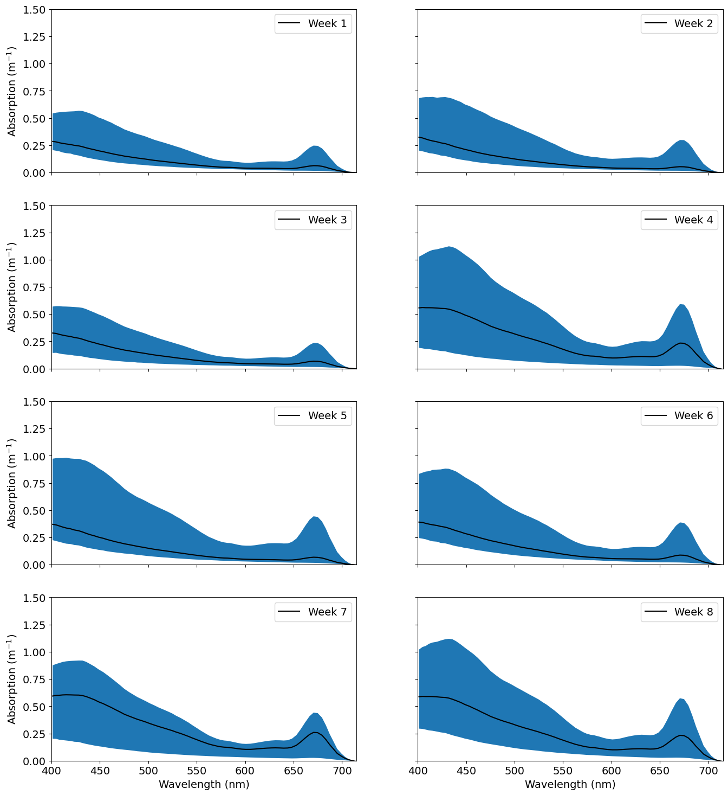

Accessing and Processing the Optical Absorption and Attenuation (OPTAA) Data from OOI
Contents
Accessing and Processing the Optical Absorption and Attenuation (OPTAA) Data from OOI#
OOI uses the Sea-Bird Electronics, AC-S In-Situ Spectrophotometer to measure the in situ absorption and beam attenuation coefficients from approximately 400 to 750 nm at a 4 nm resolution. Each sensor is equipped with a unique filter set that determines the exact wavelengths measured and the total number of wavelengths measured. This difference in the number of measured wavelengths and, to a certain extent, their specific values can cause complications when trying to compare measurements across deployments. One solution, presented here, is to reset the number of wavelengths for each unique instrument/deployment instance using fill values to pad out the number of wavelengths and the absorption and beam attenuation measurements to a fixed number of wavelengths. This creates a common dimension for the number of wavelengths that can be used when subsequently concatenating data across deployments.
An additional issue is the volume of data produced by the sensor. A full deployment’s worth of data can get rather unwieldy. Per a recommendation from the vendor, the first 45 seconds worth of data should be discarded after an instrument starts up. Dropping those records will help to reduce the volume of the data. We can also use burst averaging to further reduce the volume. Burst averaging has an added benefit in helping to reduce some of the point-to-point noisiness that is common in bio-optical data (biology is messy!).
The benefit to using the local data directory, as opposed to the Gold Copy THREDDS catalog or the OOI M2M system is the speed of access to the data. In the M2M system, each and every user request for the data requires the system to collect, process and format the data prior to delivery. For complex data, or data that requires extensive processing, this time can be quite lengthy. With the Gold Copy THREDDS catalog, those requests have already been done for you and you can just start with downloading the data, but there is still a cost to downloading files over the internet. With local directory access, the data files can be directly loaded from disk with no need to download them from a remote server.
Note, this example will only work on the OOI JupyterHub where we have access to the kdata directory. If you want to run this code from your home or work computer, simply replace the load_kdata function calls with load_gc_thredds.
%matplotlib inline
# load the different libraries and modules needed for the analysisimportcsvimportioimportnumpyasnpimportosimportpandasaspdimportreimportxarrayasxrfromooi_data_explorations.commonimportget_vocabulary,load_kdatafromooi_data_explorations.uncabled.process_optaaimportoptaa_dataloggerfrommatplotlibimportpyplotasplt
For this example, we’ll look at the data from Deployment 3 of the Oregon Shelf Surface Mooring. The instrument failed after approximately 8 weeks into the deployment, so this is not a full deployments worth of data. This particular instrument is run once an hour for 2-4 minutes at ~4 Hz. Each measurement cycle represents a burst measurement.
The user needs to set some needed parameters to find the data, such as the site, node, sensor, method and stream name prior to downloading the data. With that knowledge the load_kdata function can be used (with an optional regex tag) to load the data of interest.
# Setup needed parameters for the requestsite='CE02SHSM'# OOI Net site designatornode='RID27'# OOI Net node designatorsensor='01-OPTAAD000'# OOI Net sensor designatorstream='optaa_dj_dcl_instrument_recovered'# OOI Net stream namemethod='recovered_host'# OOI Net data delivery methodlevel='nsif'# local directory name, level below siteinstrmt='optaa'# local directory name, instrument below level# We are after the the data from deployment 3vocab=get_vocabulary(site,node,sensor)[0]deploy=3# load data from the local kdata directoryoptaa=load_kdata(site,node,sensor,method,stream,('*deployment%04d*OPTAA*.nc'%deploy))# set up the calibration file path and namecal_path=os.path.join(os.path.expanduser('~'),'acs_workshop/data/reprocess',site.lower(),level,instrmt)cal_path=os.path.abspath(cal_path)ifnotos.path.exists(cal_path):os.makedirs(cal_path)cal_file=('{}.{}.{}.deploy{:02d}.cal_coeffs.json'.format(site.lower(),level,instrmt,deploy))cal_file=os.path.join(cal_path,cal_file)
Downloading 3 data file(s) from the local kdata directory
Downloading 3 data file(s) from the local kdata directory
Loading and Processing Data Files: 100%|██████████| 3/3 [00:12<00:00, 4.33s/it]
Merging the data files into a single dataset
# view the dataset as downloaded from OOI (with some minor modifications, e.g. switching dimensions from obs to time)optaa
The Optical Beam Attenuation Coefficient is the rate that the intensity of a beam of light will decrease in response to the combined effects of absorption and scatter as a function of propagation distance. The Attenuation Coefficient results from the spectral beam attenuation of the combination of all seawater impurities including all particulate and dissolved matter of optical importance.
Internal Instrument Temperature of the Absorption Spectrophotometer. These data are used in the calculation of the optical absorption coefficient as changes in instrument internal temperature may alter absorption properties of the seawater.
Optical Absorption Coefficient is the rate that the intensity of a beam of light will decrease in response to the absorption (removal) of light energy as a function of propagation distance. The Optical Absorption Coefficient reflects the absorption coefficient for the combination of all seawater impurities including all particulate and dissolved matter of optical importance.
Salinity is generally defined as the concentration of dissolved salt in a parcel of seawater. Practical Salinity is a more specific unitless quantity calculated from the conductivity of seawater and adjusted for temperature and pressure. It is approximately equivalent to Absolute Salinity (the mass fraction of dissolved salt in seawater) but they are not interchangeable.
2023-06-14T15:56:59.875854 generated from Stream Engine
Manufacturer :
WET Labs
ModelNumber :
AC-S
SerialNumber :
ACS-267
Description :
Spectrophotometer: OPTAA Series D
FirmwareVersion :
Not specified.
SoftwareVersion :
Not specified.
AssetUniqueID :
CGINS-OPTAAD-00267
Notes :
Not specified.
Owner :
Not specified.
RemoteResources :
[]
ShelfLifeExpirationDate :
Not specified.
Mobile :
False
AssetManagementRecordLastModified :
2023-06-02T18:55:56.365000
time_coverage_start :
2016-05-17T22:30:17.000000000Z
time_coverage_end :
2016-07-16T17:30:39.528000000Z
time_coverage_resolution :
P6.16S
geospatial_lat_min :
44.63565
geospatial_lat_max :
44.63565
geospatial_lat_units :
degrees_north
geospatial_lat_resolution :
0.1
geospatial_lon_min :
-124.30427
geospatial_lon_max :
-124.30427
geospatial_lon_units :
degrees_east
geospatial_lon_resolution :
0.1
geospatial_vertical_units :
meters
geospatial_vertical_resolution :
0.1
geospatial_vertical_positive :
down
lat :
44.63565
lon :
-124.30427
You can just start working with the OOI OPTAA data as-is at this point. However, the OOI OPTAA data sets do not include data products from the intermediate optical absorption and beam attenuation processing steps, where:
the data has been converted from the raw, but has not been corrected for the effects of temperature and salinity or scattering
the data has been corrected for the effects of temperature and salinity, but the scattering correction has not been applied to the optical absorption data
the optical absorption data has been corrected for effects of scattering (this example utilizes the baseline scatter correction method)
Instead the OOI OPTAA only has the raw data and the final, temperature, salinity and scatter corrected data. It is considered good practice to make the intermediate data products available to users, especially more advanced users wishing to assess different methods for the scatter corrections. Additionally, if corrections to the spectra are required, using offsets determined by pre-deployment calibrations, these intermediate data products will be needed.
The process_optaa module (with different processing functions based on the platform the AC-S was deployed on) has been set up to recalculate these intermediate products starting from the raw measurements. Additionally, the scattering correction has been switched to the simpler Baseline Correction method from the more complicated modified proportional method employed by OOI. This simpler algorithm tends to be more robust across all deployments, but arguments can be made for trying different methods. With the reprocessed data, the option to try different scatter correction methods is now a much simpler process.
In order to create these intermediate data products, we first need to download the vendor calibration data for the instrument from the OOI Asset Management records accessible via the OOI M2M system. The cal_file variable created above will hold this data. The first time the calibration data is downloaded, this file will be created. After that, the code will reuse the already downloaded data. The calibration data is saved in a JSON formatted data file, making both human and machine readable.
# use the optaa_datalogger function for AC-S data from surface mooringsoptaa=optaa_datalogger(optaa,cal_file)
Converting absorption data ...: 100%|██████████| 1288/1288 [00:00<00:00, 3080.04it/s]
Converting attenuation data ...: 100%|██████████| 1288/1288 [00:00<00:00, 6750.66it/s]
# remove the data at the tail end when the instrument was failing and show the results of the re-processed data in comparison to the originaloptaa=optaa.sel(time=slice('2016-05-17T00:00:00','2016-07-09T23:59:50'))optaa
An index counter between 0 and 99 used to set a common length dimension for the absorbance and attenuation measurements. The actual number of wavelengths is variable between sensors and may even change for a particular sensor over time if servicing requires a replacement of the filter set. The actual number of wavelengths for this sensor is represented here by the attribute actual_wavelengths.
Raw measurements, reported in counts, from the AC-S internal temperature sensor. This sensor measures the internal instrument temperature and is used in converting the raw optical measurements into absorbance and attenuation estimates.
Attenuation channel reference detector dark counts (before the lamp is turned on). Used in conversion of the raw attenuation channel measurements to attenuation estimates.
Salinity is generally defined as the concentration of dissolved salt in a parcel of sea water. Practical Salinity is a more specific unit-less quantity calculated from the conductivity of sea water and adjusted for temperature and pressure. It is approximately equivalent to Absolute Salinity (the mass fraction of dissolved salt in sea water), but they are not interchangeable. Measurements are from a co-located CTD.
Attenuation channel signal detector dark counts (before the lamp is turned on). Used in conversion of the raw attenuation channel measurements to attenuation estimates.
Absorption channel signal detector dark counts (before the lamp is turned on). Used in conversion of the raw absorption channel measurements to absorbance estimates.
Absorption channel reference detector dark counts (before the lamp is turned on). Used in conversion of the raw absorption channel measurements to absorbance estimates.
Offset used to correct for spectral jumps commonly seen in the AC-S data where the sensor uses two holographic gratings to span the full spectral range. Adding the offset to all values from the grate_index (included as an additional attribute) to the end of the spectra will restore the AC-S data to values reported by the sensor.
Offset used to correct for spectral jumps commonly seen in the AC-S data where the sensor uses two holographic gratings to span the full spectral range. Adding the offset to all values from the grate_index (included as an additional attribute) to the end of the spectra will restore the AC-S data to values reported by the sensor.
Uses the absorption line height at 676 nm, above a linear background between 650 and 715 nm, with a chlorophyll specific absorption of 0.020 L/ug/m to estimate the concentration of chlorophyll. This method has been shown to be significantly related to extracted chlorophyll concentrations and is robust in response to mild to moderate bio-fouling.
Uses the particulate beam attenuation coefficient at 660 nm and a coefficient of 380 ug/L/m. This calculation is not robust in response to bio-fouling and is expected to breakdown as bio-fouling begins to dominate the signal.
Ratio of CDOM absorption in the violet portion of the spectrum at 412 nm relative to chlorophyll absorption at 440 nm. Ratios greater than 1 indicate a preponderance of CDOM absorption relative to chlorophyll.
Ratio of carotenoid absorption in the blue-green portion of the spectrum at 490 nm relative to chlorophyll absorption at 440 nm. A changing carotenoid to chlorophyll ratio may indicate a shift in phytoplankton community composition in addition to changes in light history or bloom health and age.
Ratio of phycobilin absorption in the green portion of the spectrum at 530 nm relative to chlorophyll absorption at 440 nm. Different phytoplankton, notably cyanobacteria, utilize phycobilins as accessory light harvesting pigments. An increasing phycobilin to chlorophyll ratio may indicate a shift in phytoplankton community composition.
The Soret and the Q bands represent the two main absorption bands of chlorophyll. The former covers absorption in the blue region of the spectrum, while the latter covers absorption in the red region. A decrease in the ratio of the intensity of the Soret band at 440 nm to that of the Q band at 676 nm may indicate a change in phytoplankton community structure. All phytoplankton contain chlorophyll a as the primary light harvesting pigment, but green algae and dinoflagellates contain chlorophyll b and c, respectively, which are spectrally redshifted compared to chlorophyll a.
Absorption channel signal detector raw counts (while the lamp is turned on). Used in conversion of the raw absorption channel measurements to absorbance estimates.
Absorption channel reference detector raw counts (while the lamp is turned on). Used in conversion of the raw absorption channel measurements to absorbance estimates.
Optical Absorption Coefficient is the rate that the intensity of a beam of light will decrease in response to the absorption (removal) of light energy as a function of propagation distance. The Optical Absorption Coefficient reflects the absorption coefficient for the combination of all seawater impurities including all particulate and dissolved matter of optical importance.
The optical absorption coefficient is the rate that the intensity of a beam of light will decrease in response to the absorption (removal) of light energy as a function of propagation distance. The optical absorption coefficient reflects the absorption coefficient for the combination of all seawater impurities, including all particulate and dissolved matter of optical importance.
Particulate and Dissolved Absorbance with TS Correction
units :
m-1
comment :
The optical absorption coefficient corrected for the effects of temperature and salinity. Utilizes data from a co-located CTD for the temperature and salinity, if available. If no co-located CTD data is available, will assume a constant salinity of 33 psu and will use the OPTAAs external temperature sensor.
ancillary_variables :
wavelength_a sea_water_temperature sea_water_practical_salinity external_temp apg
The optical absorption coefficient corrected for scattering after correcting for temperature and salinity. Utilizes Method 1 (baseline correction) by subtracting the absorption at 715 nm from all values; assumes scattering is flat across wavelengths.
Attenuation channel signal detector raw counts (while the lamp is turned on). Used in conversion of the raw attenuation channel measurements to attenuation estimates.
Attenuation channel reference detector raw counts (while the lamp is turned on). Used in conversion of the raw attenuation channel measurements to attenuation estimates.
The Optical Beam Attenuation Coefficient is the rate that the intensity of a beam of light will decrease in response to the combined effects of absorption and scatter as a function of propagation distance. The Attenuation Coefficient results from the spectral beam attenuation of the combination of all seawater impurities including all particulate and dissolved matter of optical importance.
The optical beam attenuation coefficient is the rate that the intensity of a beam of light will decrease in response to the combined effects of absorption and scatter as a function of propagation distance. The attenuation coefficient results from the spectral beam attenuation of the combination of all seawater impurities including all particulate and dissolved matter of optical importance.
Particulate and Dissolved Attenuation with TS Correction
units :
m-1
comment :
The optical beam attenuation coefficient corrected for the effects of temperature and salinity. Utilizes data from a co-located CTD for the temperature and salinity, if available. If no co-located CTD data is available, will assume a constant salinity of 33 psu and will use the OPTAAs external temperature sensor.
At this point the optaa record is at a point where it can be saved locally or used in further work looking across deployments or between sites. Note, this data file will be used as the first curated dataset in the workshop. By running this notebook, you will be creating a copy of this dataset for your personal use. It will be saved in /home/jovyan/acs_workshop/data/reprocess/ce02shsm/nsif/optaa. You can download the file to your local machine or work with it here in the JupyterHub.
Some of the work one might want to do is a review of the data by comparing the instrument temperature records versus the co-located CTD data, by computing different parameters (chlorophyll concentration, POC, and absorption ratios) from the absorption and attenuation records and by reviewing the shape and magnitude of the aborption and attenuation spectra.
The CTD seawater temperature and the instrument internal temperature are inputs to the functions used to calculate the optical absorption and beam attenuation. The data from the external temperature sensor on the AC-S is not used, but it should be producing values very close to the CTD (the AC-S temperaure sensor is not as accurate as the CTD). All three measurements should be very similar. If they are not, that might be an indication that there is a problem with one of the sensors.
%matplotlib inline
# Plot the instrument and co-located CTD temperature recordsplt.rcParams.update({'font.size':14})fig=plt.figure(figsize=(16,9))plt.plot(optaa['time'],optaa['sea_water_temperature'],'-k',label='CTD')plt.plot(optaa['time'],optaa['internal_temp'],label='AC-S Internal')plt.plot(optaa['time'],optaa['external_temp'],label='AC-S External')plt.ylabel('Seawater Temperature (degC)')plt.legend()
<matplotlib.legend.Legend at 0x7f5dcd4dc310>

The AC-S data can be used to create estimates of the chlorophyll and particulate organic carbon (POC) concentration. These can be compared to data from a co-located fluorometer to help validate the performance of the sensors. Additionally, pigment ratios can be calculated to assess the impacts of biofouling, potential changes in community composition, light history or bloom health and age.
CDOM Ratio – ratio of CDOM absorption in the violet portion of the spectrum at 412 nm relative to chlorophyll absorption at 440 nm. Ratios greater than 1 indicate a preponderance of CDOM absorption relative to chlorophyll.
Carotenoid Ratio – ratio of carotenoid absorption in the blue-green portion of the spectrum at 490 nm relative to chlorophyll absorption at 440 nm. A changing carotenoid to chlorophyll ratio may indicate a shift in phytoplankton community composition in addition to changes in light history or bloom health and age.
Phycobilin Ratio – ratio of phycobilin absorption in the green portion of the spectrum at 530 nm relative to chlorophyll absorption at 440 nm. Different phytoplankton, notably cyanobacteria, utilize phycobilins as accessory light harvesting pigments. An increasing phycobilin to chlorophyll ratio may indicate a shift in phytoplankton community composition.
Q Band Ratio – the Soret and the Q bands represent the two main absorption bands of chlorophyll. The former covers absorption in the blue region of the spectrum, while the latter covers absorption in the red region. A decrease in the ratio of the intensity of the Soret band at 440 nm to that of the Q band at 676 nm may indicate a change in phytoplankton community structure. All phytoplankton contain chlorophyll a as the primary light harvesting pigment, but green algae and dinoflagellates contain chlorophyll b and c, respectively, which are spectrally redshifted compared to chlorophyll a.
Before we look at the estimated chlorophyll and POC data, it will be helpful to pull in data from the co-located Sea-Bird Electronics ECO Triplet (FLORT). This data can also be used to create estimates of chlorophyll and POC, which can then be cross-compared to the AC-S estimates. This provides a useful means of validating the data.
fromooi_data_explorations.uncabled.process_flortimportflort_datalogger# Setup needed parameters for the requestsite='CE02SHSM'# OOI Net site designatornode='RID27'# OOI Net node designatorsensor='02-FLORTD000'# OOI Net sensor designatorstream='flort_sample'# OOI Net stream namemethod='recovered_host'# OOI Net data delivery methodlevel='nsif'# local directory name, level below siteinstrmt='flort'# local directory name, instrument below level# We are after the the data from deployment 3vocab=get_vocabulary(site,node,sensor)[0]deploy=3# load data from the local kdata directoryflort=load_kdata(site,node,sensor,method,stream,('*deployment%04d*FLORT*.nc'%deploy))flort=flort_datalogger(flort,burst=True)flort=flort.sel(time=slice('2016-05-17T00:00:00','2016-07-09T23:59:50'))# create an estimate of POC from the particulate backscatter dataflort['estimated_poc']=53607*(flort['bback']-flort['sea_water_scattering_coefficient'])+2.5# derived from Cetinic et al., 2012 and references there in
Downloading 1 data file(s) from the local kdata directory
Downloading 1 data file(s) from the local kdata directory
Loading and Processing Data Files: 100%|██████████| 1/1 [00:15<00:00, 15.45s/it]
More commonly referred to as Chromophoric Dissolved Organic Matter (CDOM). CDOM plays an important role in the carbon cycling and biogeochemistry of coastal waters. It occurs naturally in aquatic environments primarily as a result of tannins released from decaying plant and animal matter, and can enter coastal areas in river run-off containing organic materials leached from soils.
Total (particulate + water) optical backscatter at 700 nm, derived from the Volume Scattering Function and corrected for effects of temperature and salinity.
Theoretical estimation of the optical backscatter for pure seawater at 700 nm adjusted for theeffects of temperature and salinity. This value is added to the particulate optical backscatter measurement to create the total optical backscatter measurement contained in this data set.
Salinity is generally defined as the concentration of dissolved salt in a parcel of sea water. Practical Salinity is a more specific unitless quantity calculated from the conductivity of sea water and adjusted for temperature and pressure. It is approximately equivalent to Absolute Salinity (the mass fraction of dissolved salt in sea water), but they are not interchangeable. Measurements are from a co-located CTD.
Radiative flux is the sum of shortwave and longwave radiative fluxes. Scattering of radiation is its deflection from its incident path without loss of energy. The volume scattering function is the intensity (flux per unit solid angle) of scattered radiation per unit length of scattering medium, normalised by the incident radiation flux.
Estimated chlorophyll concentration based upon a calibration curve derived from a fluorescent proxy approximately equal to 25 ug/l of a Thalassiosira weissflogii phytoplankton culture. This measurement is considered to be an estimate only of the true chlorophyll concentration.
Total Optical Backscatter at 700 nm QC Summary Flag
standard_name :
aggregate_quality_flag
comment :
Converts the QC Results values from a bitmap to a QARTOD style summary flag, where the values are 1 == pass, 2 == not evaluated, 3 == suspect or of high interest, 4 == fail, and 9 == missing. The QC tests, as applied by OOI, only yield pass or fail values.
2024-02-14T04:35:36.628984 generated from Stream Engine
Manufacturer :
WET Labs
ModelNumber :
ECO Triplet-w
SerialNumber :
1152
Description :
3-Wavelength Fluorometer: FLORT Series D
FirmwareVersion :
Not specified.
SoftwareVersion :
Not specified.
AssetUniqueID :
CGINS-FLORTD-01152
Notes :
Not specified.
Owner :
Not specified.
RemoteResources :
[]
ShelfLifeExpirationDate :
Not specified.
Mobile :
False
AssetManagementRecordLastModified :
2023-12-22T17:47:37.905000
time_coverage_start :
2016-05-17T21:47:21.441999872Z
time_coverage_end :
2016-09-28T15:18:01.607000576Z
time_coverage_resolution :
P6.16S
geospatial_lat_min :
44.63565
geospatial_lat_max :
44.63565
geospatial_lat_units :
degrees_north
geospatial_lat_resolution :
0.1
geospatial_lon_min :
-124.30427
geospatial_lon_max :
-124.30427
geospatial_lon_units :
degrees_east
geospatial_lon_resolution :
0.1
geospatial_vertical_units :
meters
geospatial_vertical_resolution :
0.1
geospatial_vertical_positive :
down
lat :
44.63565
lon :
-124.30427
# plot the estimated chlorophyll and POC concentrationsplt.rcParams.update({'font.size':14})fig=plt.figure(figsize=(16,9))ax1=plt.subplot(211)plt.plot(flort['time'],flort['estimated_chlorophyll'],label='FLORT')plt.plot(optaa['time'],optaa['estimated_chlorophyll'],label='OPTAA')plt.ylabel('Chlorophyll ($\mu$g/L)')plt.setp(ax1.get_xticklabels(),visible=False)# turn off x-axis ticklabelsplt.ylim([0,25])plt.legend(loc='upper left')ax2=plt.subplot(212,sharex=ax1)plt.plot(flort['time'],flort['estimated_poc'])plt.plot(optaa['time'],optaa['estimated_poc'])plt.ylabel('POC (mg C/m$^3$)')plt.ylim([0,1500])plt.show()

Note the excellent agreement between the AC-S and the ECO Triplet chlorophyll estimates, but the beginning of a divergence in the POC estimates towards the later third of the data set. This divergence suggests that biofouling might be starting to impact the AC-S measurements. The attenuation channel will usually be the most sensitive to the development of biofouling (the POC estimate is derived from the attenuation data).
# plot the pigment ratiosplt.rcParams.update({'font.size':14})fig=plt.figure(figsize=(16,11))ax1=plt.subplot(411)plt.plot(optaa['time'],optaa['ratio_cdom'])plt.ylabel('CDOM Ratio')plt.setp(ax1.get_xticklabels(),visible=False)# turn off x-axis ticklabelsplt.ylim([0,2])ax2=plt.subplot(412,sharex=ax1)plt.plot(optaa['time'],optaa['ratio_carotenoids'])plt.ylabel('Carotenoid Ratio')plt.setp(ax2.get_xticklabels(),visible=False)# turn off x-axis ticklabelsplt.ylim([0,1])ax3=plt.subplot(413,sharex=ax1)plt.plot(optaa['time'],optaa['ratio_phycobilins'])plt.ylabel('Phycobilin Ratio')plt.setp(ax3.get_xticklabels(),visible=False)# turn off x-axis ticklabelsplt.ylim([0,1])ax4=plt.subplot(414,sharex=ax1)plt.plot(optaa['time'],optaa['ratio_qband'])plt.ylabel('Q Band Ratio')plt.ylim([0,1])plt.show()

Finally, examining the shape and magnitudes of the absorption and attenuation spectra can be helpful in assessing the instrument performance in addition to revealing interesting information about the in situ absorption and attenuation properties of the seawater.
# create groups of data organized by the weekweeks=optaa.groupby('time.week').groupsnweek=[ifori,kinweeks.items()]# plot weekly summaries of the absorption spectra (the mean and the min and max range)plt.rcParams.update({'font.size':14})fig=plt.figure(figsize=(16,18))ax1=plt.subplot(421)week=optaa.isel(time=weeks[nweek[0]])plt.plot(week['wavelength_a'][0,:],week['apg_ts_s'].mean(axis=0),'-k',label='Week 1')plt.fill_between(week['wavelength_a'][0,:],week['apg_ts_s'].min(axis=0),week['apg_ts_s'].max(axis=0))plt.ylim([0,1.5])plt.ylabel('Absorption (m$^{-1}$)')plt.xlim([400,715])plt.setp(ax1.get_xticklabels(),visible=False)# turn off x-axis ticklabelsplt.legend()ax2=plt.subplot(422,sharex=ax1,sharey=ax1)week=optaa.isel(time=weeks[nweek[1]])plt.plot(week['wavelength_a'][0,:],week['apg_ts_s'].mean(axis=0),'-k',label='Week 2')plt.fill_between(week['wavelength_a'][0,:],week['apg_ts_s'].min(axis=0),week['apg_ts_s'].max(axis=0))plt.setp(ax2.get_xticklabels(),visible=False)# turn off x-axis ticklabelsplt.setp(ax2.get_yticklabels(),visible=False)# turn off y-axis ticklabelsplt.legend()ax3=plt.subplot(423,sharex=ax1,sharey=ax1)week=optaa.isel(time=weeks[nweek[2]])plt.plot(week['wavelength_a'][0,:],week['apg_ts_s'].mean(axis=0),'-k',label='Week 3')plt.fill_between(week['wavelength_a'][0,:],week['apg_ts_s'].min(axis=0),week['apg_ts_s'].max(axis=0))plt.setp(ax3.get_xticklabels(),visible=False)# turn off x-axis ticklabelsplt.ylabel('Absorption (m$^{-1}$)')plt.legend()ax4=plt.subplot(424,sharex=ax1,sharey=ax1)week=optaa.isel(time=weeks[nweek[3]])plt.plot(week['wavelength_a'][0,:],week['apg_ts_s'].mean(axis=0),'-k',label='Week 4')plt.fill_between(week['wavelength_a'][0,:],week['apg_ts_s'].min(axis=0),week['apg_ts_s'].max(axis=0))plt.setp(ax4.get_xticklabels(),visible=False)# turn off x-axis ticklabelsplt.setp(ax4.get_yticklabels(),visible=False)# turn off y-axis ticklabelsplt.legend()ax5=plt.subplot(425,sharex=ax1,sharey=ax1)week=optaa.isel(time=weeks[nweek[4]])plt.plot(week['wavelength_a'][0,:],week['apg_ts_s'].mean(axis=0),'-k',label='Week 5')plt.fill_between(week['wavelength_a'][0,:],week['apg_ts_s'].min(axis=0),week['apg_ts_s'].max(axis=0))plt.setp(ax5.get_xticklabels(),visible=False)# turn off x-axis ticklabelsplt.ylabel('Absorption (m$^{-1}$)')plt.legend()ax6=plt.subplot(426,sharex=ax1,sharey=ax1)week=optaa.isel(time=weeks[nweek[5]])plt.plot(week['wavelength_a'][0,:],week['apg_ts_s'].mean(axis=0),'-k',label='Week 6')plt.fill_between(week['wavelength_a'][0,:],week['apg_ts_s'].min(axis=0),week['apg_ts_s'].max(axis=0))plt.setp(ax6.get_xticklabels(),visible=False)# turn off x-axis ticklabelsplt.setp(ax6.get_yticklabels(),visible=False)# turn off y-axis ticklabelsplt.legend()ax7=plt.subplot(427,sharex=ax1,sharey=ax1)week=optaa.isel(time=weeks[nweek[6]])plt.plot(week['wavelength_a'][0,:],week['apg_ts_s'].mean(axis=0),'-k',label='Week 7')plt.fill_between(week['wavelength_a'][0,:],week['apg_ts_s'].min(axis=0),week['apg_ts_s'].max(axis=0))plt.xlabel('Wavelength (nm)')plt.ylabel('Absorption (m$^{-1}$)')plt.legend()ax8=plt.subplot(428,sharex=ax1,sharey=ax1)week=optaa.isel(time=weeks[nweek[7]])plt.plot(week['wavelength_a'][0,:],week['apg_ts_s'].mean(axis=0),'-k',label='Week 8')plt.fill_between(week['wavelength_a'][0,:],week['apg_ts_s'].min(axis=0),week['apg_ts_s'].max(axis=0))plt.xlabel('Wavelength (nm)')plt.setp(ax8.get_yticklabels(),visible=False)# turn off y-axis ticklabelsplt.legend()plt.show()

# plot weekly summaries of the attenuation spectra (the mean and the min and max range)plt.rcParams.update({'font.size':14})fig=plt.figure(figsize=(16,18))ax1=plt.subplot(421)week=optaa.isel(time=weeks[nweek[0]])plt.plot(week['wavelength_c'][0,:],week['cpg_ts'].mean(axis=0),'-k',label='Week 1')plt.fill_between(week['wavelength_c'][0,:],week['cpg_ts'].min(axis=0),week['cpg_ts'].max(axis=0))plt.ylim([0,12])plt.ylabel('Attenuation (m$^{-1}$)')plt.xlim([400,715])plt.setp(ax1.get_xticklabels(),visible=False)# turn off x-axis ticklabelsplt.legend()ax2=plt.subplot(422,sharex=ax1,sharey=ax1)week=optaa.isel(time=weeks[nweek[1]])plt.plot(week['wavelength_c'][0,:],week['cpg_ts'].mean(axis=0),'-k',label='Week 2')plt.fill_between(week['wavelength_c'][0,:],week['cpg_ts'].min(axis=0),week['cpg_ts'].max(axis=0))plt.setp(ax2.get_xticklabels(),visible=False)# turn off x-axis ticklabelsplt.setp(ax2.get_yticklabels(),visible=False)# turn off y-axis ticklabelsplt.legend()ax3=plt.subplot(423,sharex=ax1,sharey=ax1)week=optaa.isel(time=weeks[nweek[2]])plt.plot(week['wavelength_c'][0,:],week['cpg_ts'].mean(axis=0),'-k',label='Week 3')plt.fill_between(week['wavelength_c'][0,:],week['cpg_ts'].min(axis=0),week['cpg_ts'].max(axis=0))plt.setp(ax3.get_xticklabels(),visible=False)# turn off x-axis ticklabelsplt.ylabel('Attenuation (m$^{-1}$)')plt.legend()ax4=plt.subplot(424,sharex=ax1,sharey=ax1)week=optaa.isel(time=weeks[nweek[3]])plt.plot(week['wavelength_c'][0,:],week['cpg_ts'].mean(axis=0),'-k',label='Week 4')plt.fill_between(week['wavelength_c'][0,:],week['cpg_ts'].min(axis=0),week['cpg_ts'].max(axis=0))plt.setp(ax4.get_xticklabels(),visible=False)# turn off x-axis ticklabelsplt.setp(ax4.get_yticklabels(),visible=False)# turn off y-axis ticklabelsplt.legend()ax5=plt.subplot(425,sharex=ax1,sharey=ax1)week=optaa.isel(time=weeks[nweek[4]])plt.plot(week['wavelength_c'][0,:],week['cpg_ts'].mean(axis=0),'-k',label='Week 5')plt.fill_between(week['wavelength_c'][0,:],week['cpg_ts'].min(axis=0),week['cpg_ts'].max(axis=0))plt.setp(ax5.get_xticklabels(),visible=False)# turn off x-axis ticklabelsplt.ylabel('Attenuation (m$^{-1}$)')plt.legend()ax6=plt.subplot(426,sharex=ax1,sharey=ax1)week=optaa.isel(time=weeks[nweek[5]])plt.plot(week['wavelength_c'][0,:],week['cpg_ts'].mean(axis=0),'-k',label='Week 6')plt.fill_between(week['wavelength_c'][0,:],week['cpg_ts'].min(axis=0),week['cpg_ts'].max(axis=0))plt.setp(ax6.get_xticklabels(),visible=False)# turn off x-axis ticklabelsplt.setp(ax6.get_yticklabels(),visible=False)# turn off y-axis ticklabelsplt.legend()ax7=plt.subplot(427,sharex=ax1,sharey=ax1)week=optaa.isel(time=weeks[nweek[6]])plt.plot(week['wavelength_c'][0,:],week['cpg_ts'].mean(axis=0),'-k',label='Week 7')plt.fill_between(week['wavelength_c'][0,:],week['cpg_ts'].min(axis=0),week['cpg_ts'].max(axis=0))plt.xlabel('Wavelength (nm)')plt.ylabel('Attenuation (m$^{-1}$)')plt.legend()ax8=plt.subplot(428,sharex=ax1,sharey=ax1)week=optaa.isel(time=weeks[nweek[7]])plt.plot(week['wavelength_c'][0,:],week['cpg_ts'].mean(axis=0),'-k',label='Week 8')plt.fill_between(week['wavelength_c'][0,:],week['cpg_ts'].min(axis=0),week['cpg_ts'].max(axis=0))plt.xlabel('Wavelength (nm)')plt.setp(ax8.get_yticklabels(),visible=False)# turn off y-axis ticklabelsplt.legend()plt.show()